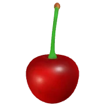

FIRST HARVEST UJI • KYOTO
Craft
Your
Ritual
Pure ceremonial Tencha from Kyoto, stone-ground to 5 microns. Rotate and explore every angle in 360° to craft your personal zen ritual.
GLOBAL TEA AWARDS
PREMIUM BOTANICAL SODA 2025
